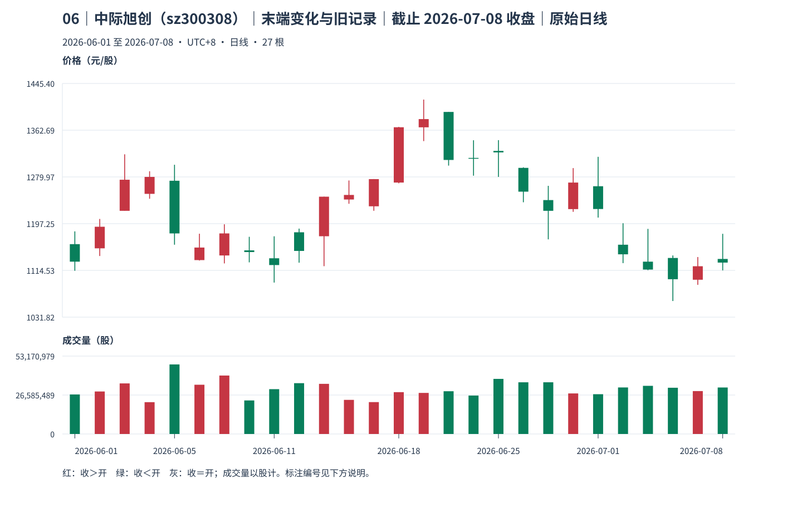
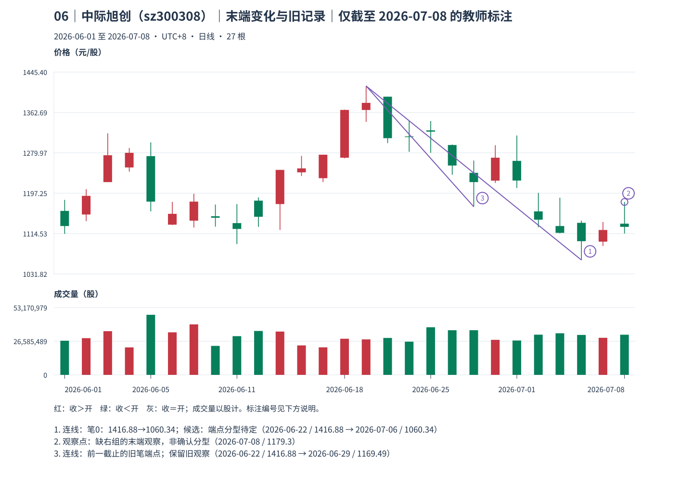
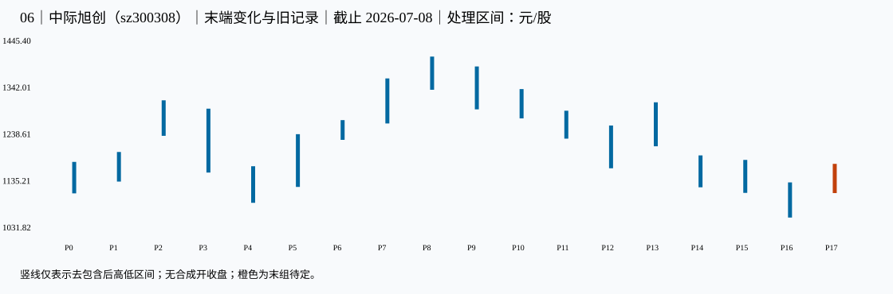

06｜中际旭创（sz300308）｜末端变化与旧记录｜本包讲解
教师讲解仅截止 2026-07-08；先保留同编号原答，逐小段核对、确认理解后再继续。
真实未复权日线；价格单位元/股（CNY/share），成交量单位股（shares），横轴按实际交易日顺序。窗口避开已知价格基准变化，其他公司行为及现金分红日历仍未穷尽核准；价格差不单独证明技术破位、经济损失或投资总回报。样本按教学需要事后选取，不用于估计模式频率。
声明起点 2026-06-01，首对 raw 0=[1113.900,1183.610]、raw 1（2026-06-02）=[1140.010,1205.580]，互不包含，高低共同向上。只按本窗口启动，未补造更早热身资料，也未绑定此前已确认段；左边界限制仍保留，首个笔端点不能自动作为真实段起点。
这一例实际算出了什么
只用截至 2026-07-07 的同起点前缀，末笔从 顶 P8，2026-06-22 的 1416.88 元/股 连到 底 P12，2026-06-29 的 1169.49 元/股；当时端点三组 formed_at=2026-06-30，known_at=2026-07-02，状态 latest_endpoint_revisable。保留这个旧观察。
新增至本包 2026-07-08，同类端点改为 底 P16，2026-07-06 的 1060.34 元/股。旧价 1169.49 → 新价 1060.34，差 -109.15 元/股；共同起点不变，属于同类更极端更新，未跨过合格反向端点。
新端点极值发生 2026-07-06，右组首根使三组形成于 2026-07-08；本包首次看到这次更新，但新分型 known_at=未可知，仍待独立后组，新笔 known_at=未可知，仍待独立后组，状态 provisional_fractal。更新事件可见不等于端点已稳定。
本课为一个当前截止包，前一截止由同包较短前缀计算；没有另一个可提前读取的后续答案包。应追加本次观察，不能改写旧记录或按后来极值回填成交。
known_at 是本窗口、给定口径下边界证据齐备之日，空值表示尚待；confirmed_at_cutoff＝本截止内分型满足；provisional_right_group＝右组尚可吸收；provisional_fractal＝笔端点仍待；latest_endpoint_revisable＝末端仍可修订；accepted_at_cutoff＝本次接受。所有状态均非永久确认。
对照原图、标注和处理区间



展开本截止的逐根映射、分型、笔、拒绝与修订证据
1 原始 K 线 → 处理区间
| 原始号 | 日期 | 开 | 高 | 低 | 收 | 映射到 |
|---|---|---|---|---|---|---|
| 0 | 2026-06-01 | 1161.000 | 1183.610 | 1113.900 | 1130.000 | P0 |
| 1 | 2026-06-02 | 1153.600 | 1205.580 | 1140.010 | 1191.810 | P1 |
| 2 | 2026-06-03 | 1220.000 | 1320.000 | 1220.000 | 1275.000 | P2 |
| 3 | 2026-06-04 | 1250.000 | 1290.000 | 1241.360 | 1280.000 | P2 |
| 4 | 2026-06-05 | 1273.200 | 1301.510 | 1160.000 | 1179.990 | P3 |
| 5 | 2026-06-08 | 1132.790 | 1179.450 | 1132.000 | 1154.990 | P4 |
| 6 | 2026-06-09 | 1140.970 | 1196.160 | 1126.900 | 1180.000 | P4 |
| 7 | 2026-06-10 | 1150.000 | 1174.000 | 1128.800 | 1147.000 | P4 |
| 8 | 2026-06-11 | 1136.000 | 1174.900 | 1093.000 | 1124.000 | P4 |
| 9 | 2026-06-12 | 1182.000 | 1188.500 | 1128.180 | 1149.000 | P5 |
| 10 | 2026-06-15 | 1175.000 | 1245.000 | 1122.000 | 1245.000 | P5 |
| 11 | 2026-06-16 | 1240.000 | 1273.680 | 1232.460 | 1248.090 | P6 |
| 12 | 2026-06-17 | 1228.000 | 1276.130 | 1220.050 | 1276.110 | P6 |
| 13 | 2026-06-18 | 1270.000 | 1368.500 | 1268.730 | 1367.880 | P7 |
| 14 | 2026-06-22 | 1367.780 | 1416.880 | 1343.380 | 1382.330 | P8 |
| 15 | 2026-06-23 | 1395.000 | 1395.000 | 1300.000 | 1310.010 | P9 |
| 16 | 2026-06-24 | 1313.610 | 1344.880 | 1282.150 | 1312.180 | P10 |
| 17 | 2026-06-25 | 1326.000 | 1345.090 | 1280.020 | 1323.400 | P10 |
| 18 | 2026-06-26 | 1296.000 | 1296.940 | 1235.130 | 1253.890 | P11 |
| 19 | 2026-06-29 | 1239.000 | 1264.210 | 1169.490 | 1220.000 | P12 |
| 20 | 2026-06-30 | 1223.010 | 1295.600 | 1218.210 | 1270.000 | P13 |
| 21 | 2026-07-01 | 1263.500 | 1315.570 | 1208.000 | 1223.170 | P13 |
| 22 | 2026-07-02 | 1160.000 | 1198.000 | 1127.400 | 1143.000 | P14 |
| 23 | 2026-07-03 | 1130.000 | 1188.010 | 1115.000 | 1116.000 | P15 |
| 24 | 2026-07-06 | 1136.540 | 1141.000 | 1060.340 | 1098.920 | P16 |
| 25 | 2026-07-07 | 1098.000 | 1138.200 | 1089.000 | 1121.900 | P16 |
| 26 | 2026-07-08 | 1134.800 | 1179.300 | 1114.560 | 1128.350 | P17 |
| 处理号 | 原始号 | 日期范围 | [低,高] | 低点实际日 | 高点实际日 | 合并方向 | 形成/末次修改 | 右边界已知日 |
|---|---|---|---|---|---|---|---|---|
| P0 | [0] | 2026-06-01—2026-06-01 | [1113.9,1183.61] | 2026-06-01 | 2026-06-01 | 无合并 | 2026-06-01 | 2026-06-02 |
| P1 | [1] | 2026-06-02—2026-06-02 | [1140.01,1205.58] | 2026-06-02 | 2026-06-02 | 无合并 | 2026-06-02 | 2026-06-03 |
| P2 | [2, 3] | 2026-06-03—2026-06-04 | [1241.36,1320] | 2026-06-04 | 2026-06-03 | up | 2026-06-04 | 2026-06-05 |
| P3 | [4] | 2026-06-05—2026-06-05 | [1160,1301.51] | 2026-06-05 | 2026-06-05 | 无合并 | 2026-06-05 | 2026-06-08 |
| P4 | [5, 6, 7, 8] | 2026-06-08—2026-06-11 | [1093,1174] | 2026-06-11 | 2026-06-10 | down | 2026-06-11 | 2026-06-12 |
| P5 | [9, 10] | 2026-06-12—2026-06-15 | [1128.18,1245] | 2026-06-12 | 2026-06-15 | up | 2026-06-15 | 2026-06-16 |
| P6 | [11, 12] | 2026-06-16—2026-06-17 | [1232.46,1276.13] | 2026-06-16 | 2026-06-17 | up | 2026-06-17 | 2026-06-18 |
| P7 | [13] | 2026-06-18—2026-06-18 | [1268.73,1368.5] | 2026-06-18 | 2026-06-18 | 无合并 | 2026-06-18 | 2026-06-22 |
| P8 | [14] | 2026-06-22—2026-06-22 | [1343.38,1416.88] | 2026-06-22 | 2026-06-22 | 无合并 | 2026-06-22 | 2026-06-23 |
| P9 | [15] | 2026-06-23—2026-06-23 | [1300,1395] | 2026-06-23 | 2026-06-23 | 无合并 | 2026-06-23 | 2026-06-24 |
| P10 | [16, 17] | 2026-06-24—2026-06-25 | [1280.02,1344.88] | 2026-06-25 | 2026-06-24 | down | 2026-06-25 | 2026-06-26 |
| P11 | [18] | 2026-06-26—2026-06-26 | [1235.13,1296.94] | 2026-06-26 | 2026-06-26 | 无合并 | 2026-06-26 | 2026-06-29 |
| P12 | [19] | 2026-06-29—2026-06-29 | [1169.49,1264.21] | 2026-06-29 | 2026-06-29 | 无合并 | 2026-06-29 | 2026-06-30 |
| P13 | [20, 21] | 2026-06-30—2026-07-01 | [1218.21,1315.57] | 2026-06-30 | 2026-07-01 | up | 2026-07-01 | 2026-07-02 |
| P14 | [22] | 2026-07-02—2026-07-02 | [1127.4,1198] | 2026-07-02 | 2026-07-02 | 无合并 | 2026-07-02 | 2026-07-03 |
| P15 | [23] | 2026-07-03—2026-07-03 | [1115,1188.01] | 2026-07-03 | 2026-07-03 | 无合并 | 2026-07-03 | 2026-07-06 |
| P16 | [24, 25] | 2026-07-06—2026-07-07 | [1060.34,1138.2] | 2026-07-06 | 2026-07-07 | down | 2026-07-07 | 2026-07-08 |
| P17 | [26] | 2026-07-08—2026-07-08 | [1114.56,1179.3] | 2026-07-08 | 2026-07-08 | 无合并 | 2026-07-08 | 末组仍可吸收 |
2 分型：发生与知道分列
| 顶/底 | 中心/三组 | 极值日/价 | 三组最早形成日 | 右组末次吸收 | 边界已知日 | 截止状态 |
|---|---|---|---|---|---|---|
| top | P2: [1, 2, 3] | 2026-06-03: 1320 | 2026-06-05 | 2026-06-05 | 2026-06-08 | confirmed_at_cutoff |
| bottom | P4: [3, 4, 5] | 2026-06-11: 1093 | 2026-06-12 | 2026-06-15 | 2026-06-16 | confirmed_at_cutoff |
| top | P8: [7, 8, 9] | 2026-06-22: 1416.88 | 2026-06-23 | 2026-06-23 | 2026-06-24 | confirmed_at_cutoff |
| bottom | P12: [11, 12, 13] | 2026-06-29: 1169.49 | 2026-06-30 | 2026-07-01 | 2026-07-02 | confirmed_at_cutoff |
| top | P13: [12, 13, 14] | 2026-07-01: 1315.57 | 2026-07-02 | 2026-07-02 | 2026-07-03 | confirmed_at_cutoff |
| bottom | P16: [15, 16, 17] | 2026-07-06: 1060.34 | 2026-07-08 | 2026-07-08 | 尚无独立后组 | provisional_right_group |
3 严格笔与拒绝项
| 笔号/方向 | 起点日/价 | 终点日/价 | 处理中心间距 | 全范围 | 分型证据齐备日 | 状态 |
|---|---|---|---|---|---|---|
| 0 | 2026-06-22: 1416.88 | 2026-07-06: 1060.34 | 8 | [1060.34,1416.88] | 分型末组待定 | down; provisional_fractal |
| 起点 | 候选终点 | 中心距 | 拒绝原因 |
|---|---|---|---|
| 2026-06-03 | 2026-06-11 | 2 | spacing |
| 2026-06-29 | 2026-07-01 | 1 | spacing |
4 同类极值更新记录
| 旧端点 | 新端点 | 修订首次观察日 | 新端点分型确认日 | 原因 |
|---|---|---|---|---|
| 2026-06-03: 1320 | 2026-06-22: 1416.88 | 2026-06-23 | 2026-06-24 | same_kind_more_extreme |
| 2026-06-29: 1169.49 | 2026-07-06: 1060.34 | 2026-07-08 | 尚待确认 | same_kind_more_extreme |
仅本包计算证据 JSON；M11；M12。本图不产生已完成线段、中枢或收益证明。
本包核对完毕后，进入下一份原图；仍须先保存下一包自己的回答。